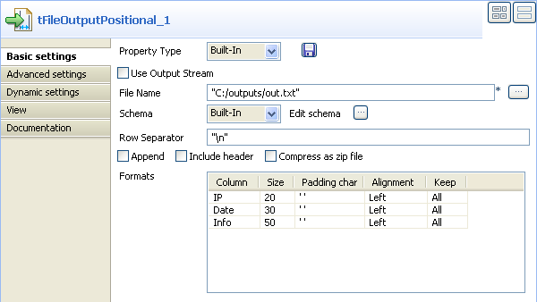

Scenario: Regex to Positional file
- The following scenario creates a two-component job, reading data from an Input file using regular expression and outputting delimited data into an XML file.

- Click and drop a tFileInputRegex component from the Palette to the design workspace.
- Click and drop a tFileOutputPositional component the same way.
- Right-click on the tFileInputRegex component and select Row > Main. Drag this main row link onto the tFileOutputPositional component and release when the plug symbol displays.
- Select the tFileInputRegex again so the properties tab shows up, and define the properties:

- The job is built-in for this scenario. Hence, the Properties are set for this station only.
- Fill in a path to the file in File Name field. This field is mandatory.
- Define the Row separator identifying the end of a row.
- Then define the Regular expression in order to delimit fields of a row, which are to be passed on to the next component. You can type in a regular expression using Perl code, and on mutiple lines if needed.

- Take care to use the correct Regex syntax according to the generation language in use as the syntax is different in Java/Perl.
- In this expression, make sure you include all subpatterns matching the fields to be extracted.
- In this scenario, ignore the header, footer and limit fields.
- Select a local (Built-in) Schema type to define the data to pass on to the tFileOutputPositional component.
- You can load or create the schema through the Edit Schema function.
- Then define the second component properties:

- Enter the Positional file output path.
- Enter the Encoding standard, the output file is encoded in. Note that, for the time being, the encoding consistency verification is not supported.
- Select the Schema type. Click on Sync columns to automatically synchronize the schema with the Input file schema.
- Now go to the Run Job tab, and click on Run to execute the job.
- The file is read row by row and split up into fields based on the Regular Expression definition. You can open it using any standard file editor.